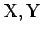

Inhalt Index DeskTop Bronstein

 Funktionalanalysis Adjungierte Operatoren in normierten Räumen
Funktionalanalysis Adjungierte Operatoren in normierten Räumen


Für einen linearen stetigen Operator wobei  normierte Räume sind, ordnet man jedem  durch
durch  ein Funktional
ein Funktional  zu. Auf diese Weise entsteht ein linearer stetiger Operator
zu. Auf diese Weise entsteht ein linearer stetiger Operator
der adjungierter Operator zu T heißt und die folgenden Eigenschaften besitzt:
, wobei für die linearen stetigen Operatoren  und , (
und , ( sind normierte Räume) der Operator
sind normierte Räume) der Operator  auf natürliche Weise durch ST(x)=S(T(x)) definiert ist.
auf natürliche Weise durch ST(x)=S(T(x)) definiert ist.
Mit den in den Abschnitten Lineare Operatoren und Funktionale und
Stetige lineare Funktionale im HILBERT-Raum eingeführten Bezeichnungen bestehen für einen Operator  die folgenden Identitäten:
die folgenden Identitäten:
wobei die Abgeschlossenheit von Im(T) die Abgeschlossenheit von Im(T*) impliziert.
Der Operator , den man als (T*)* aus T* gewinnt, heißt der zweite adjungierte Operator zu T und hat die Eigenschaft: Ist . Der Operator ist also eine Erweiterung von  .
.
Im HILBERT-Raum  kann auf Grund des RIESZschen Satzes der adjungierte Operator mit Hilfe des Skalarprodukts eingeführt werden, wobei sich wegen der Identifizierung von
kann auf Grund des RIESZschen Satzes der adjungierte Operator mit Hilfe des Skalarprodukts eingeführt werden, wobei sich wegen der Identifizierung von  und neben und I*=I sogar T**=T ergibt. Ist T bijektiv, so ist es auch , und es gilt . Für die Resolventen von T und T* gilt die Beziehung
und neben und I*=I sogar T**=T ergibt. Ist T bijektiv, so ist es auch , und es gilt . Für die Resolventen von T und T* gilt die Beziehung
woraus sich für das Spektrum des adjungierten Operators ergibt.
| Beispiel A |
|
Sei T ein Integraloperator mit stetigem Kern |
der im Raum betrachtet wird. Der zu T adjungierte Operator ist ebenfalls ein Integraloperator
mit dem Kern , wobei yg das gemäß (12.165) zu existierende Element aus Lq ist.
| Beispiel B |
|
Im endlichdimensionalen komplexen Vektorraum ist der adjungierte zu einem durch die Matrix A=(aij) repräsentierten Operator gerade durch die Matrix A* mit definiert. |